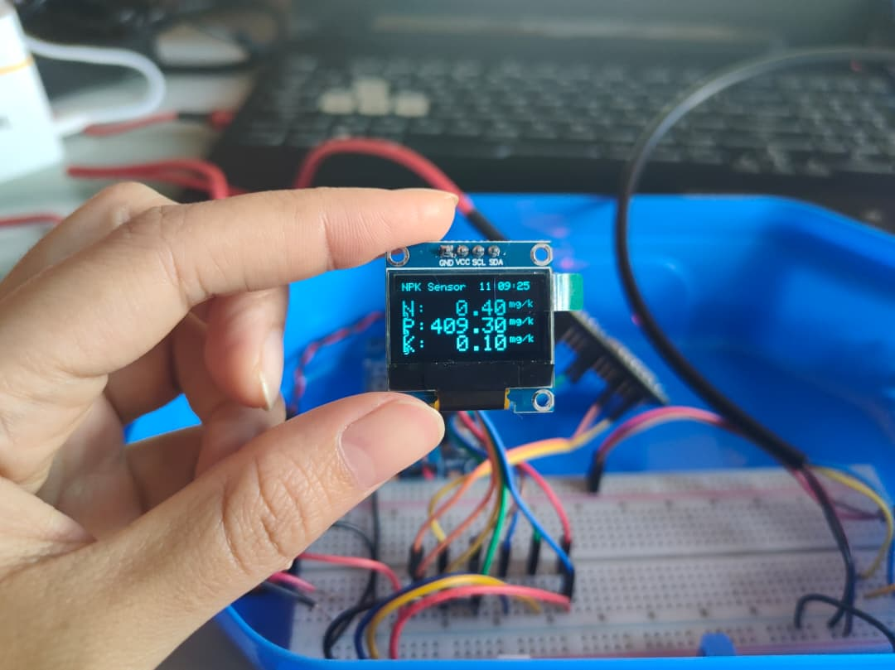

Project Summary
This Final Year Project focuses on developing an IoT-based monitoring system to study the relationship between soil nutrients (NPK) and root progression after mycorrhizal fungi (AMF) application. Soil NPK readings are collected using an NPK sensor and stored in Firebase, while root growth is monitored through microscope images across scheduled weeks. The collected data is visualized and analyzed to support decision-making for sustainable agriculture practices.

Prototype / Hardware Setup Image